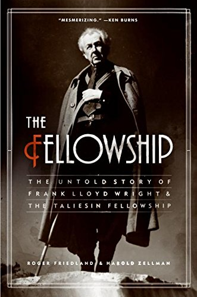

Harold ZellmanRoger Friedland

Olavo de Carvalho
Livro muito bem documentado. um movimento que junta uma teoria estética com uma teoria social nova, utopista etc, para formar uma comunidade em um novo estilo de vida, mais ou menos uniforme, existindo uma disciplina expressa, sempre existe alguma coisa por trás disso. ou algo ocultista ou islâmico. É o único livro que existe a respeito do assunto.
Ver também
- (Chapter 01) ‘The Fellowship’ (https://www.nytimes.com/2006/11/28/books/chapters/1126-1st-frie.html)
- (Book Review) The Fellowship: The Untold Story of Frank Lloyd Wright and the Taliesin Fellowship by Roger Friedland and Harold Zellman (http://www.caareviews.org/reviews/1133#.XPAyMm3waUk)
- (Book Review) The Fellowship: The Untold Story of Frank Lloyd Wright and the Taliesin Fellowship by Roger Friedland and Harold Zellman (https://www.nytimes.com/2006/11/26/books/review/Ouroussoff.t.html)
- (Book Review) The Fellowship: The Untold Story of Frank Lloyd Wright and the Taliesin Fellowship by Roger Friedland and Harold Zellman (https://www.artsjournal.com/artopia/2006/10/wright_was_wrong.html)
- (Book Review) The Fellowship: The Untold Story of Frank Lloyd Wright and the Taliesin Fellowship by Roger Friedland and Harold Zellman (https://www.independent.com/2006/09/06/sex-lies-and-frank-lloyd-wright/)